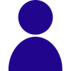

Explore pontos turísticos da cidade.
Encontre os melhores restaurantes e comidas típicas.
Veja opções de hotéis e hospedagens.
Conheça a história e informações sobre o São João de Arcoverde.

Informações sobre o desenvolvedor do App.